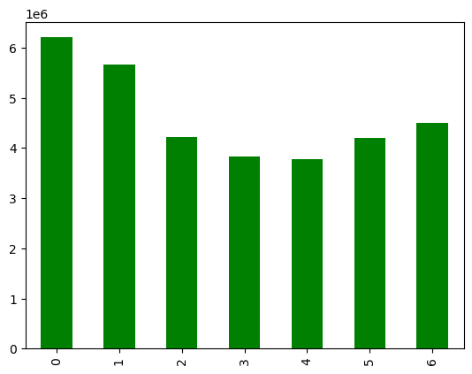
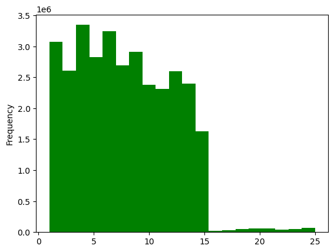
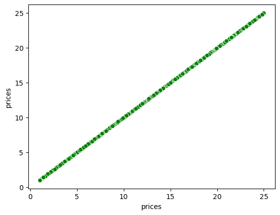
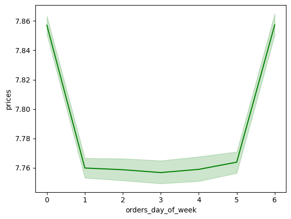
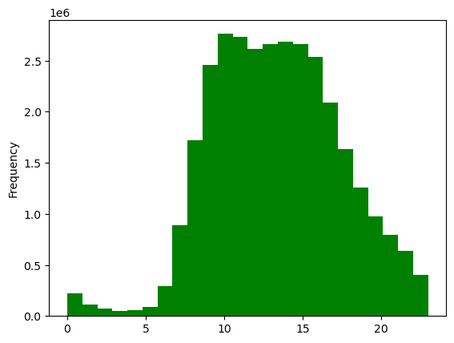
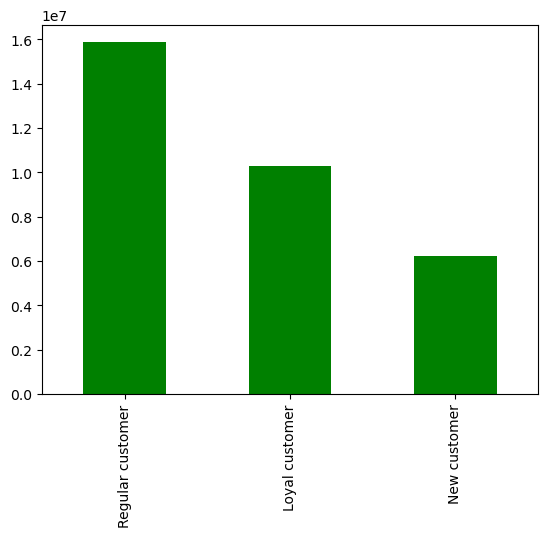
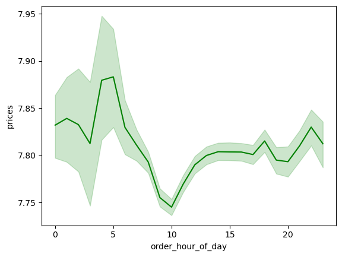
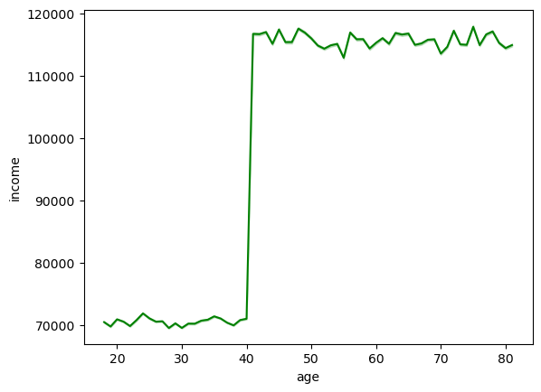
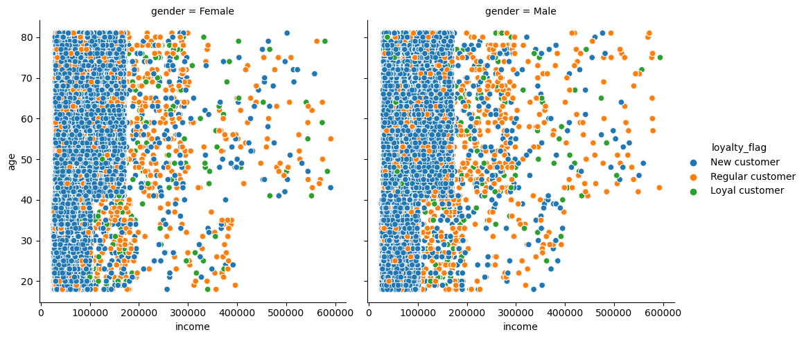

Data visualization#
01 Setup#
#Import Libraries
import pandas as pd
import numpy as np
import os
import matplotlib.pyplot as plt
import seaborn as sns
import scipy
# Path
path = r'/Users/peanutcookie/instacart-book/'
# Import orders_products_merged.pkl file
df_orders = pd.read_pickle(os.path.join(path, '_database', 'orders_products_merged.pkl'))
df_orders.dtypes
order_id object
user_id object
order_number int64
order_day_of_week int64
order_hour_of_day int64
days_since_prior_order float64
new_customer bool
product_id object
add_to_cart_order int64
reordered int64
product_name object
department_id object
prices float64
max_order int64
loyalty_flag object
average_price float64
spending_type object
median_prior_orders float64
order_frequency_flag object
dtype: object
# Import customers.pkl file
df_customers = pd.read_pickle(os.path.join(path, '_database', 'customers.pkl'))
df_customers.dtypes
user_id object
gender object
state object
age int64
signup_date object
income int64
dtype: object
# Merge dataframes
df_instacart_data = df_orders.merge(df_customers, on = 'user_id')
02 Sampling data set#
# Set seed
np.random.seed(4)
# Create list of random floating numbers between 0 and 1 and uniform distribution
dev = np.random.rand(len(df_instacart_data)) <= 0.7
dev
array([False, True, False, ..., True, True, True])
# Create a sample dataframe with 70% of the data
sample70 = df_instacart_data[dev]
# Create a sample dataframe with 30% of the data
sample30 = df_instacart_data[~dev]
# Accuracy check
len(df_instacart_data)
32404859
len(sample70) + len(sample30)
32404859
# Create new dataframe for further data analysis
df_order_days_prices = sample30[['orders_day_of_week','prices']]
---------------------------------------------------------------------------
KeyError Traceback (most recent call last)
Cell In[14], line 2
1 # Create new dataframe for further data analysis
----> 2 df_order_days_prices = sample30[['orders_day_of_week','prices']]
File ~/anaconda3/lib/python3.10/site-packages/pandas/core/frame.py:3813, in DataFrame.__getitem__(self, key)
3811 if is_iterator(key):
3812 key = list(key)
-> 3813 indexer = self.columns._get_indexer_strict(key, "columns")[1]
3815 # take() does not accept boolean indexers
3816 if getattr(indexer, "dtype", None) == bool:
File ~/anaconda3/lib/python3.10/site-packages/pandas/core/indexes/base.py:6070, in Index._get_indexer_strict(self, key, axis_name)
6067 else:
6068 keyarr, indexer, new_indexer = self._reindex_non_unique(keyarr)
-> 6070 self._raise_if_missing(keyarr, indexer, axis_name)
6072 keyarr = self.take(indexer)
6073 if isinstance(key, Index):
6074 # GH 42790 - Preserve name from an Index
File ~/anaconda3/lib/python3.10/site-packages/pandas/core/indexes/base.py:6133, in Index._raise_if_missing(self, key, indexer, axis_name)
6130 raise KeyError(f"None of [{key}] are in the [{axis_name}]")
6132 not_found = list(ensure_index(key)[missing_mask.nonzero()[0]].unique())
-> 6133 raise KeyError(f"{not_found} not in index")
KeyError: "['orders_day_of_week'] not in index"
# Subset sample dataframe
fig7sample = sample30[['order_hour_of_day', 'prices']]
fig8sample = sample30[['age', 'income']]
fig9sample = sample30[['income', 'gender', 'loyalty_flag', 'age']]
03 Data visualisation#
# Visualise frequency of orders for week days
fig1 = df_orders['orders_day_of_week'].value_counts().sort_index().plot.bar(color="green")

Fig.1 Bar chart - frequency of orders for each day of the week.
# Show the density of a price (continuous) variable
fig2 = df_orders['prices'].plot.hist(bins = 20, color="green")

Fig.2 Histogram - Density of prices
# Show distribution of data points in prices
fig3 = sns.scatterplot(x = 'prices', y = 'prices',data = df_orders, color="green")

Fig. 3 Scatterplot - Distribution of prices.
# Visualise customer spending for week days
fig4 = sns.lineplot(data = df_order_days_prices, x = 'orders_day_of_week',y = 'prices', color="green")

Fig. 4 Line chart - Change in customer spending depending on the day of the week.
# Visualise customer activity during the day
fig5 = df_orders['order_hour_of_day'].plot.hist(bins = 24, color="green")

Fig 5. Histogram - Customers activity during the day.
# Statistics insights for day hours
df_orders['order_hour_of_day'].describe()
count 3.240486e+07
mean 1.342515e+01
std 4.246380e+00
min 0.000000e+00
25% 1.000000e+01
50% 1.300000e+01
75% 1.600000e+01
max 2.300000e+01
Name: order_hour_of_day, dtype: float64
MOST ORDERS = Between 8 - 18 the orders number don’t drop below 1.6 mln
AVERAGE ORDERS = At 19 orders osccilate below 1.6 Mln but are higher than 1 mln
FEWEST ORDERS = Orders occuring between 21 and 7 are below 1 mln
# Visualise distribution of loyal customers
fig6 = df_orders['loyalty_flag'].value_counts().plot.bar(color="green")

Fig 6. Bar chart - Distribution of customers.
# Visualise expediture difference
fig7 = sns.lineplot(data = fig7sample, x = 'order_hour_of_day', y = 'prices', color="green")

Fig. 7. Lineplot - Expediture differences.
# Visualise connection between age and income
fig8 = sns.lineplot(data = fig8sample, x = 'age', y = 'income', color="green")

Fig. 8 Line chart - Correlation between age and income.
fig9 = sns.relplot(
data=sample30,
x="income", y="age", hue="loyalty_flag", col="gender",
)

Fig. 9 Heatmap - Income distribution by age and gender for different customers types.
03 Export#
# Export data to pkl
df_instacart_data.to_pickle(os.path.join(path, '_database', 'instacart_data.pkl'))
fig1.figure.savefig(os.path.join(path, '_static/assets', 'fig1.png'))
fig2.figure.savefig(os.path.join(path, '_static/assets', 'fig2.png'))
fig3.figure.savefig(os.path.join(path, '_static/assets', 'fig3.png'))
fig4.figure.savefig(os.path.join(path, '_static/assets', 'fig4.png'))
fig5.figure.savefig(os.path.join(path, '_static/assets', 'fig5.png'))
fig6.figure.savefig(os.path.join(path, '_static/assets', 'fig6.png'))
fig7.figure.savefig(os.path.join(path, '_static/assets', 'fig7.png'))
fig8.figure.savefig(os.path.join(path, '_static/assets', 'fig8.png'))
fig9.figure.savefig(os.path.join(path, '_static/assets', 'fig9.png'))